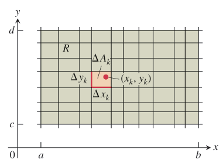
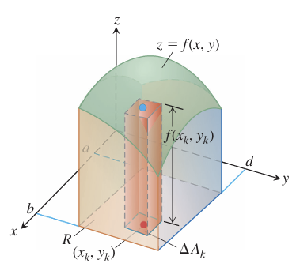
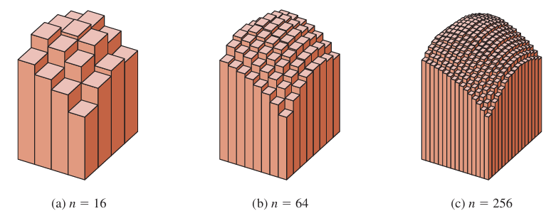
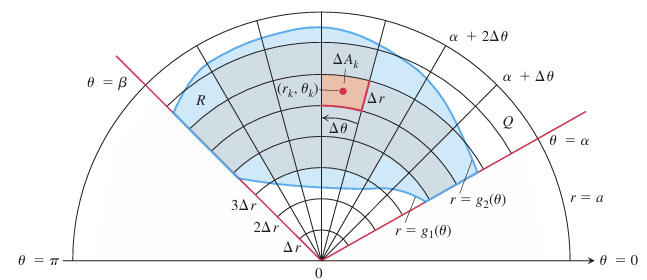

OVERVIEW sThis chapter introduces double and triple integrals, which extend integration to functions of two and three variables. Double integrals compute signed volumes and areas, while triple integrals find volumes in space. We also explore coordinate transformations, such as polar, cylindrical, and spherical coordinates, to simplify calculations.
Just as a definite integral is defined as a limit of Riemann sums for single-variable functions, a double integral extends this idea to functions of two variables over a rectangle. It is constructed by partitioning the region, multiplying function values by small area elements, and summing the results.
Double Integrals
To define a double integral, we first consider a function over a rectangular region R. We divide R into small rectangles, each with area ΔA=ΔxΔy. A Riemann sum is then formed by choosing points (xk,yk ) in each small rectangle, multiplying f(xk,yk) by ΔAk and summing the results. The value of this sum depends on the chosen points.
As the widths and heights of the partitioned rectangles approach zero, the Riemann sums may converge to a single value, regardless of the chosen points (xk,yk). If this limit exists, the function is considered integrable, and the limit is defined as the double integral of f over R.
$$\iint_R f(x, y) dA \quad \text{or} \quad \iint_R f(x, y) dxdy.$$
Double Integrals as Volumes
When f(x,y) is positive over a rectangular region RRR, the double integral represents the volume of the solid bounded by R in the xy-plane and the surface z=f(x,y). The Riemann sum approximates this volume by summing the volumes of vertical rectangular boxes above each partitioned area ΔAk.
$$\text{Volume} = \lim_{n \to \infty} S_n = \iint_R f(x, y) dA,$$
where ΔAk → 0 as n → ∞.
Fubini’s Theorem for Calculating Double Integrals
Fubini's Theorem states that if a function f(x, y) is continuous over a rectangular region R, then the double integral over R can be computed as an iterated integral in either order:
$$\iint_R f(x, y) dA = \int_c^d \int_a^b f(x, y) dx dy = \int_a^b \int_c^d f(x, y) dy dx.$$
Interpretation:
- Iterated Integrals Represent Volume: When the function f(x, y) represents the height of a surface over a region R, the double integral computes the volume under the surface.
- Choice of Order of Integration: We can integrate with respect to x first and then y, or vice versa, which allows for flexibility in choosing the easier computation path.
In this section, we define and evaluate double integrals over more general bounded regions in the plane, not just rectangles. These integrals are computed as iterated integrals, but the main challenge is determining the limits of integration.
To find the double integral over a non-rectangular region, we approximate it with small rectangles that fit inside the region. We calculate the sum of the function's value times the rectangle's area for each rectangle. As the rectangles get smaller, this sum approaches the double integral.
EXAMPLE Find the volume of the prism whose base is the triangle in the xy-plane bounded by the x-axis and the lines y = x and x = 1 and whose top lies in the plane z = f(x, y) = 3 - x - y.
Solution For any x between 0 and 1, y may vary from y = 0 to y = x. Hence,
$$V = \int_0^1 \int_0^x (3 - x - y) dy dx = \int_0^1 [3y - xy - \frac{y^2}{2}]_{y=0}^{y=x} dx$$
$$= \int_0^1 (3x - \frac{3x^2}{2}) dx = [\frac{3x^2}{2} - \frac{x^3}{2}]_{x=0}^{x=1} = 1.$$
Although a double integral may be calculated as an iterated integral in either order of integration, the value of one integral may be easier to find than the value of the other. The next example shows how this can happen.
EXAMPLE Calculate $$\iint_R \frac{\sin x}{x} dA$$, where R is the triangle in the xy-plane bounded by the x-axis, the line y = x, and the line x = 1.
Solution If we integrate first with respect to y and next with respect to x, then because x is held fixed in the first integration, we find
$$\int_0^1 \left(\int_0^x \frac{\sin x}{x} dy\right) dx = \int_0^1 \left[y \frac{\sin x}{x}\right]_{y=0}^{y=x} dx = \int_0^1 \sin x dx = -\cos(1) + 1$$
If we reverse the order of integration and attempt to calculate $$\int_0^1 \int_y^1 \frac{\sin x}{x} dx dy$$,
Properties of Double Integrals
If f(x, y) and g(x, y) are continuous on the bounded region R, then the following properties hold:
- Constant Multiple: $$\iint_R cf(x, y) dA = c \iint_R f(x, y) dA$$ (any number c)
- Sum and Difference: $$\iint_R (f(x, y) \pm g(x, y)) dA = \iint_R f(x, y) dA \pm \iint_R g(x, y) dA$$
- Domination:
- (a) $$\iint_R f(x, y) dA \geq 0$$ if $$f(x, y) \geq 0$$ on R
- (b) $$\iint_R f(x, y) dA \geq \iint_R g(x, y) dA$$ if $$f(x, y) \geq g(x, y)$$ on R
- Additivity: If R is the union of two nonoverlapping regions R₁ and R₂, then $$\iint_R f(x, y) dA = \iint_{R_1} f(x, y) dA + \iint_{R_2} f(x, y) dA$$
Double integrals are sometimes easier to evaluate if we change to polar coordinates. When we work with double integrals in the usual xy-plane, we divide the region into rectangles. This makes sense because the sides of these rectangles have constant x or y values. However, in polar coordinates, the natural shape to use is a "polar rectangle." These shapes have sides with constant r (radius) and θ (angle) values.
Suppose that a function ƒ(r, θ) is defined over a region R that is bounded by the rays θ = a and θ = b and by the continuous curves r = g1(θ) and r = g2(θ). Suppose also that 0 < g1(θ) < g2(θ) < a for every value of θ between a and b. Then R lies in a fan shaped region Q defined by the inequalities 0 < r < a and a < θ < b, where 0 < b - a < 2π.
$$\iint_R f(r, \theta) dA = \int_{\theta=\alpha}^{\theta=\beta} \int_{r=g_1(\theta)}^{r=g_2(\theta)} f(r, \theta) r dr d\theta.$$
EXAMPLE Evaluate $$\iint_R e^{x^2+y^2} dy dx$$, where R is the semicircular region bounded by the x-axis and the curve $$y = \sqrt{1 - x^2}$$.
Solution In Cartesian coordinates, the integral in question is a nonelementary integral and there is no direct way to integrate $$e^{x^2+y^2}$$ with respect to either x or y. Polar coordinates make this possible. Substituting $$x = r \cos \theta$$ and $$y = r \sin \theta$$ and replacing dy dx by $$r dr d\theta$$ give
$$\iint_R e^{x^2+y^2} dy dx = \int_0^\pi \int_0^1 e^{r^2} r dr d\theta = \int_0^\pi \left[\frac{1}{2} e^{r^2}\right]_0^1 d\theta = \int_0^\pi \frac{1}{2} (e - 1) d\theta$$ $$= \frac{1}{2} (e - 1) \pi.$$
Just as double integrals extend single integrals, triple integrals handle even more complex problems. They are used to find volumes of 3D shapes and average values of functions within 3D regions.
Triple Integrals
To define the triple integral of a function F(x, y, z) over a 3D region D, we divide a box containing D into small rectangular cells. We only consider the cells completely inside D. Within each cell, we multiply the function's value at a selected point by the cell's volume and sum these products. As the cells become infinitely small, this sum converges to the triple integral of F over D, denoted as
$$\iiint_D F(x, y, z) dV \quad \text{or} \quad \iiint_D F(x, y, z) dx dy dz.$$
This process is valid when F is continuous and D has a "reasonably smooth" boundary.